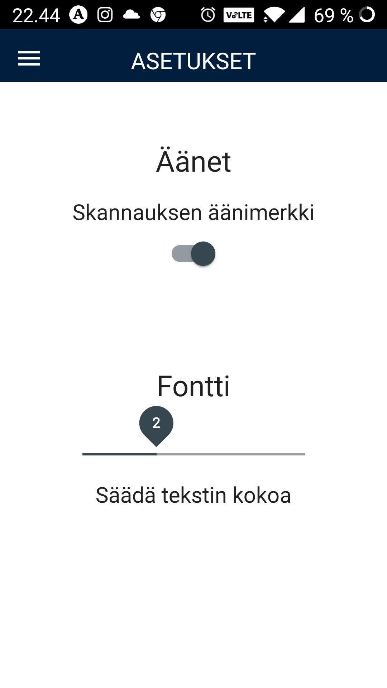

Asetukset
Sovellukseen haluttiin Asetukset-valikko, josta käyttäjä pystyy muuttamaan fonttikokoa suuremmaksi ja ottamaan halutessaan skannauksen ääniefektin pois päältä.

settings.component.html-tiedosto:
<div class="center" [ngClass]="['fs' + size]">
<h1>Äänet</h1>
<div class="lower">
<p>Skannauksen äänimerkki</p>
<mat-slide-toggle
[(ngModel)]="this.beepService.beepOn"
(ngModelChange)="soundSwitch(this.beepService.beepOn)"
[checked]="this.beepService.beepOn"
color="primary"
></mat-slide-toggle>
</div>
<h1>Fontti</h1>
<div><mat-slider color="primary" id="slider" min="1" max="4" [(ngModel)]="size" (ngModelChange)="this.fontService.setFontSize(size)" thumbLabel></mat-slider>
<p>Säädä tekstin kokoa</p>
</div>
</div>
settings.component.ts-tiedostossa käytetään servicejä:
import { Component, OnInit } from '@angular/core';
import { BeepService } from '../beep.service';
import { FontService } from '../font.service';
import { HeaderService } from '../header.service';
@Component({
selector: 'app-settings',
templateUrl: './settings.component.html',
styleUrls: ['./settings.component.css']
})
export class SettingsComponent implements OnInit {
size: string;
constructor(
public beepService: BeepService,
public fontService: FontService,
public headerService: HeaderService,
) {}
ngOnInit(): void {
this.size = this.fontService.getFontSize();
this.beepService.getBeepStateFromLocalStorage();
this.updateHeader('ASETUKSET');
}
soundSwitch(toggleState) {
this.beepService.setBeepState(toggleState);
}
beep() {
this.beepService.beep();
}
updateHeader(newHeader) {
this.headerService.updateHeader(newHeader);
}
}
font.service.ts, johon asetetaan haluttu fonttikoko Asetukset-välilehdeltä. Fonttikoko tallentuu local storageen, josta se haetaan kussakin käytetyssä komponentissa oikean fonttikoon näkymiseksi.
import { Injectable } from '@angular/core';
@Injectable({
providedIn: 'root'
})
export class FontService {
size: string;
constructor() { }
//set the chosen font size to local storage
setFontSize(newSize){
this.size = newSize;
localStorage.setItem('fontSize', newSize);
}
//get chosen font size from local storage
getFontSize(){
this.size = localStorage.getItem('fontSize');
return this.size;
}
}
beep.service.ts, joka tallentaa äänimerkin päälle ja pois local storageen. Äänimerkki on oletuksena päällä.
import { Injectable } from '@angular/core';
@Injectable({
providedIn: 'root',
})
export class BeepService {
beepOn: boolean = true;
constructor() {}
beep() {
if (this.beepOn === true) {
const audio = new Audio();
audio.src = '../../assets/beep.wav';
audio.load();
audio.play();
}
}
setBeepState(toggleState) {
// set the beep state to service and local storage
this.beepOn = toggleState;
if (this.beepOn === true) {
localStorage.setItem('beep', 'on');
} else if (this.beepOn === false){
localStorage.setItem('beep', 'off');
}
}
getBeepStateFromLocalStorage(){
const onOff = localStorage.getItem('beep');
if (onOff === 'off') {
this.beepOn = false;
} else {
this.beepOn = true;
}
}
}